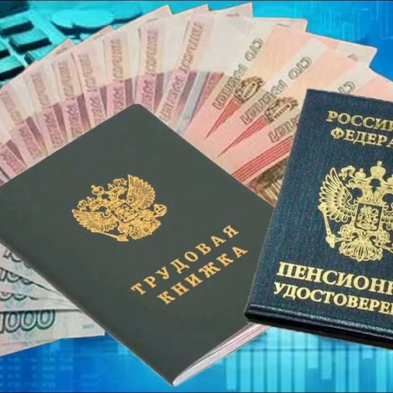

Welcome to rfgospomosh
Выяснилось, кто получит новые 15-тысячные выплаты от государства - МК
2020.12.07 20:13МК АвтоВзгляд Охотники.ру WomanHit.ru Промокоды Финансы Социальная навигация Выбрать регион
Курсы валюты:
$ 74.25 € 89.97 Свежий номер Подписка МК в Facebook МК Вконтакте МК в Одноклассниках МК в Telegram МК в Twitter МК в Viber МК в Instagram МК в Яндекс Дзен Новости Политика Экономика Происшествия Общество Спорт Культура Наука Авто Москва Подмосковье Видео Фото21.07.2020 в 13:10 Экономика 982233
+ A -Выяснилось, кто получит новые 15-тысячные выплаты от государства
«Детям сейчас дать деньги важнее, чем пенсионерам»
ПоделитьсяЕдиное пособие в размере 15 тысяч рублей попросили назначить всем российским пенсионерам в связи с пандемией коронавируса по аналогии с детскими выплатами. С соответственным предложением к премьеру Мишустину обратился член Общественной палаты РФ Султан Хамзаев. По данным общественника, во время пандемии траты пенсионеров только на лекарства, в том числе противовирусные препараты увеличились на 4 тысячи рублей. Тем временем выплатить еще одно пособие на детей в августе просят и родители, которым не хватает средств на сбор своих чад в детский сад и в школу.
Фото: Геннадий ЧеркасовПродолжит ли правительство раздачу денег населению, и кому они могут достаться, мы выяснили у экспертов
По мнению члена ОП, пенсионеры больше других нуждаются в прямой помощи государства. В период пандемии пожилые люди попали в особую группу риска, вынуждены были сидеть дома, следовать рекомендациям врачей и тратить деньги на противовирусные препараты.
«В среднем затраты пенсионеров только на лекарственные препараты увеличились на 4 000 рублей. У многих пенсионеров отсутствуют дополнительные источники доходов, кроме государственной помощи в виде обязательных ежемесячных выплат от государства (пенсий). В прошу разработать дополнительный механизм адресной помощи каждому пенсионеру в России, с единовременной выплатой в 15 000 рублей по аналогии с помощью, оказанной государством для семей с детьми», - говорится в обращении.
В то же время дополнительных выплат от государства ждут и родители с детьми, которые уже получили единовременное пособие в размере 10 тысяч рублей на ребенка в июне и июле. Петиция в интернете с просьбой продлить выплаты на август собрала уже почти 120 тысяч подписей.
Светят ли российским гражданам новые выплаты, мы выяснили у директора Центра конъюнктурных исследований ВШЭ Георгия Остапковича:
«На самом деле дополнительная помощь людям сейчас очень нужна, уже не только с экономической, но и психологической точки зрения. Если гражданам сейчас оказать поддержку, они в дальнейшем смогут справиться уже сами и выплыть из кризиса. Сейчас многие граждане находятся в когнитивном диссонансе, у них падают доходы, они боятся за свое будущее и будущее своих семей. Безусловно, помощь самым нуждающимся слоям населения – это весьма разумный шаг государства в данной ситуации. Прямые выплаты помогут в том числе и разогнать остановившуюся во время пандемии экономику. Например, те же траты на покупки к школе будут способствовать этому.
Но, чтобы раздать деньги населению, их нужно откуда-то взять, на это понадобится время. Не думаю, что выплаты подоспеют к началу августа, по логике, на них можно рассчитывать ближе к сентябрю или даже в октябре. Найти деньги на помощь населению для нашего государства не такая уж большая проблема. Допустим, вполне можно забрать часть средств из помощи, предназначенной крупным корпорациям, которые не так уж и сильно пострадали в пандемию, и раздать их людям.
Конечно, было бы неплохо, чтобы государство помогло всем: и детям, и пенсионерам. Но если выбирать, лично я бы поставил на первое место детей. Пенсионеры – это, по сути, бюджетники, их материальное положение в пандемию не сильно изменилось, они, как получали пенсию, так и получают, противовирусные препараты у нас не настолько дороги. Доходы же многих семей с детьми существенно сократились, им требуется поддержка в первую очередь. С другой стороны, чтобы выплатить пенсионерам хотя бы небольшую сумму, 4-5 тысяч рублей, даже не нужно перекраивать бюджет, такие средства всегда есть в запасе. А психологический эффект этих выплат будет более чем оправдан, люди почувствуют, что их не бросают в сложной ситуации.
Читайте также: Мишустину предложили выплатить пенсионерам по 15 тысяч рублей
Подписаться
Авторы: Светлана Цикулина Правительство РФ Россия Дети Лекарства Финансы Деньги Коронавирус Государство Кризис Пенсии Школа Экономика Дороги ПоделитьсяЧто еще почитать
СМИ: сын миллиардера найден голым и мертвым в Подмосковье
38907
MK.RUПохороны в Чечне убийцы французского учителя нарушили закон
Видео 14899
Андрей КамакинСМИ: воры "выпотрошили" российский "самолет судного дня" на аэродроме
32796
MK.RUЭксперт прокоментировал "полет" украинского дрона над Крымом
12500
Ольга БожьеваГенерал ФСБ предсказал ликвидацию установленного убийцы летчика Филиппова
16504
Сергей Вальченко Что почитать: Ещё материалыВ регионах
ОСАГО в ДНР: штрафами и не пахнет
8666
Донбасс Ольга ЯрошенкоКакие законы вступают в силу в декабре
8627
РязаньВ Крыму опубликовали ТОП-20 самых завидных невест-2020
Фото 7562
Крым Виктория Марченко, Иван МитряйкинМэрия Томска обогащается, разоряя местных предпринимателей
6188
Томск Наталья ЧижевскаяСеверный нуар от сценариста «Эпидемии»
4423
Томск Петр ГалинВ Тугулыме 72 семьи не переселяют из-за волокиты чиновников
Фото 3659
Екатеринбург Максим Бойков В регионах: Ещё материалыНовости
22:04Dragon автоматически пристыковался к МКС
21:50Российский экономист спрогнозировал рекордное подорожание продуктов
21:32Мясников допустил несколько волн коронавируса в 2021 году
21:14В России продлили ковидные правила для школ и детсадов до 2022 года
21:03Рената Литвинова сообщила о заражении коронавирусом
13:56Округлить до добра: Яндекс Go совместил поездки на такси с благотворительностью
Все новости Новости: Ещё материалыСамое читаемое
Фото Марии Горбань без трусиков взорвало соцсети
Фото 1747034
Больной раком Тиньков обратился к россиянам
1234829
Столетний член Политбюро Егор Лигачев сделал жуткое пророчество
938790
Реклама
Автовзгляд
ГИБДД хочет отправлять машины на штрафстоянку за перегоревшую лампочку
Мошенники придумали новую схему циничного «развода» автовладельцев
Как поклонники УАЗ отреагировали на фото нового «Хантера»
Womanhit
Вика Боня про Марата Сафина: «У нас есть дружеские отношения, почему нет?»
Топ−3 цвета, которые нравятся мужчинам — и вот почему
В поисках приклюЧАЙний
Охотники.ру
Пострадали охотники
Пойманы браконьеры на первом льду
Удачный дуплет
Новости Политика Экономика Происшествия Общество Спорт Культура Наука Авто Москва Подмосковье Видео ФотоМосковский Комсомолец
Авторы Издания Пресс-центр Фоторепортажи Опросы Блоги Галерея Алексея Меринова Про товары и услуги MiKi Фотоархив МК МК. Российский региональный еженедельник История газеты Вакансии КонтактыЧитателям
Подписка Подписаться на срочные новости Промокоды ФинансыРекламодателям
Реклама РИА "O'Кей" Агентство МК МК.Медиа-Сервис МК-Сервис МК-Агентство Продвижения ПрессыСоблюдение авторских прав: Все права на материалы, опубликованные на сайте www.mk.ru , принадлежат редакции и охраняются в соответствии с законодательством РФ. Использование материалов, опубликованных на сайте www.mk.ru допускается только с письменного разрешения правообладателя и с обязательной прямой гиперссылкой на страницу, с которой материал заимствован. Гиперссылка должна размещаться непосредственно в тексте, воспроизводящем оригинальный материал mk.ru , до или после цитируемого блока.
Для читателей: В России признаны экстремистскими и запрещены организации «Национал-большевистская партия», «Свидетели Иеговы», «Армия воли народа», «Русский общенациональный союз», «Движение против нелегальной иммиграции», «Правый сектор», УНА-УНСО, УПА, «Тризуб им. Степана Бандеры», «Мизантропик дивижн», «Меджлис крымскотатарского народа», движение «Артподготовка», общероссийская политическая партия «Воля», АУЕ. Признаны террористическими и запрещены: «Движение Талибан», «Имарат Кавказ», «Исламское государство» (ИГ, ИГИЛ), Джебхад-ан-Нусра, «АУМ Синрике», «Братья-мусульмане», «Аль-Каида в странах исламского Магриба», "Сеть". В РФ признана нежелательной деятельность "Открытой России".
© ЗАО "Редакция газеты "Московский Комсомолец" Электронное периодическое издание «MK.ru»
Зарегистрировано Федеральной службой по надзору в сфере связи, информационных технологий и массовых коммуникаций (Роскомнадзор). Регистрационный номер Эл №ФС77-79310 Редакция - ЗАО "Редакция газеты "Московский Комсомолец". Адрес редакции: 125993, г. Москва, ул. 1905 года, д. 7, стр. 1. Телефон: +7(495)609-44-44, +7(495)609-44-33 , e-mail info@mk.ru. Главный редактор и учредитель - П.Н. Гусев. Реклама третьих сторон
